Unit 5 - Developing Static Tests
 Download Unit Project Files
Download Unit Project FilesFlexUnit 4.x has available features for developers to plan ahead and prepare tests for classes still under development. Ignoring a test is a capability that will allow you to prototype or create tests that may not yet be relevant or operational.
While the basic assertions you have used so far will accomplish much, the more advanced assertions available by using Hamcrest inside of FlexUnit 4 will reduce complexity in your test cases and increase test legibility.
Objectives:
After completing this lesson, you should be able to:
- Set test methods to be ignored
- Refactor test methods for greater specificity
- Use
assertThat()and extensible assertions in your test methods - Write a custom matcher to be used in an
assertThat()statement - Write tests that expect an exception
Topics
In this unit, you will learn about the following topics:
- Adding additional tests
- Dealing with incomplete tests
- Ignoring a test and its benefits
- Understanding multiple assertions
- Extensible assertions
- Hamcrest
- Writing matchers
Adding additional tests
If you are a practitioner of test-first development, then you create each test in your system just before you create the code to make that test pass. In essence, you are defining the interface progressively.
However, if you are writing tests for legacy code, or writing your tests immediately after a class is written, you can inspect the code and note the expected outcome of each method. You can then write tests that will cover these conditions.
In the latter situation, it is common to write test stubs, empty functions for each required test, and implement them sequentially. The practice of creating these empty tests serves as documentation for the needed tests as they are discovered.
Consider the needed tests for the following objects:
- A box of crayons contains 12 crayons each of which is a unique color.
- Each crayon is made of wax, has a color, and a wrapper.
- Each wrapper has the color name on it.
You probably notice several things that need to be tested right away. Minimally, you need to test that the box has 12 crayons. You would need to test that each crayon is of type wax, has a color and a wrapper. You would need to test that the wrapper has a color name and that the color name is the same as the color of the crayon it wraps. Finally, you would need to test that each crayon color is unique.
public class BoxOfCrayonsCase {
[Test]
public function shouldHaveTwelveCrayons():void {}
[Test]
public function shouldHaveUniqueColors():void {}
}
public class CrayonCase {
[Test]
public function shouldBeWax():void {}
[Test]
public function shouldHaveColor():void {}
[Test]
public function shouldBeWrapped():void {}
}
public class WrapperCase {
[Test]
public function shouldHaveColorName():void {}
[Test]
public function shouldMatchWrappedCrayon():void {}
}
You now have a road map for testing. Currently none of these tests actually verify functionality. As noted previously, the lack of a failing assertion is a success so all of these tests would pass. Excellent, testing complete!
If only the world were so easy. In reality, these tests are far from complete, the fact that all these incomplete tests will pass is a problem that needs to be addressed.
Dealing with incomplete tests
There are several possible ways to deal with incomplete tests
-
Leave them as stubs - Stubbed tests still show in the test complete dialogue. They will always be marked as passing. It is very easy to forget to implement these tests and it artificially appears as though you have many valid tests.
-
Comment the tests out - These tests will not show in the complete dialogue. Like stub tests, it is very easy to forget to complete these tests as there is no visible reminder.
-
Add a special type of assertion named
fail()inside each method - This type of assertion always marks a test as a failure. This is effective, and certainly serves as a reminder that the test needs to be completed, but not the best solution as it artificially appears as though you have many failing tests. -
Ignoring - This will mark the tests in the complete dialogue without marking them as failures. When ignoring, you will receive a reminder that these tests need to be implemented but without the side effect of artificial statistics. This is the best way to deal with incomplete tests.
Ignoring a test
The [Ignore] metadata is a special type of metadata recognized by FlexUnit 4.x. It can be used on a test, test case or test suite. It is often used when a test has been written but is not ready to run with any reasonable outcome or when refactoring of a class renders specific tests temporarily irrelevant or broken
The [Ignore] metadata can also be applied to tests that have been written for a particular case, but the actual components or methods that they need to test are non-existent. For example, in the crayon example above, you may want to write the wrapper test before the wrapper class.
Finally, they can also be useful to hold on to deprecated tests that may be relevant again at a later point.
Ignored tests:
- Are neither passing nor failing tests
- Are counted and reported as Ignored by FlexUnit as a reminder
- Are easily identified and ignored through the
[Ignore]decoration
[Ignore]
[Test]
public function ignoreTest() :void
Walkthrough 1: Commenting out and Ignoring Tests
In this walkthrough you will perform the following tasks:
- Comment out several test methods.
- Ignore several test methods.
Steps
-
Open the BasicCircleTest.as file from the previous exercise.
Alternatively, if you didn't complete the previous lesson or your code is not functioning properly, you can import the FlexUnit4Training_wt1.fxp project from the Unit 5/Start folder. Please refer to Unit 2: Walkthrough 1 for instructions on importing a Flash Builder project.
Commenting out tests -
Highlight the text that comprises the
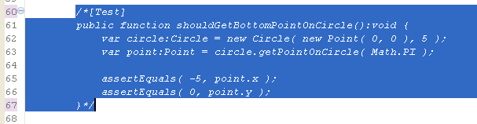shouldGetBottomPointOnCircle()function. Press Shift+Control+c (Shift+Command+C on MacOS) and the comment markers (/* and */) should be added as shown.Figure 1: Commenting code
-
Save BasicCircleTest.as
-
Run the FlexUnit4Training.mxml file again.
If FlexUnit4Training.mxml ran successfully you should see the following output in your browser window. Note that there is one less test than previously results:
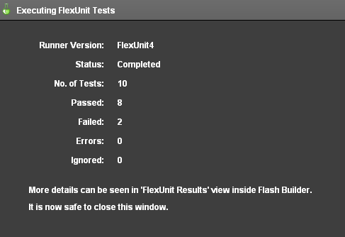Figure 2: Two test failures
Using Ignore metadata -
Re-Open the BasicCircleTest.as file. Remove the comments by highlighting the commented
shouldGetBottomPointOnCircle()function and pressing Shift+Control+c. This command will remove the comment markers. The function should look as it did at the start of this walkthrough. -
Add a line with
[Ignore]metadata above the[Test]metadata of theshouldGetBottomPointOnCircle()function.[Ignore] [Test] public function shouldGetBottomPointOnCircle():void { ... } -
Save BasicCircleTest.as.
-
Run the FlexUnit4Training.mxml file again.
If FlexUnit4Training.mxml ran successfully you should see the following output in your browser window:
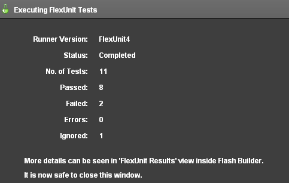Figure 3: Two test failures and one has been ignored
-
Similarly, mark the
shouldGetRightPointOnCircle,shouldGetLeftPointOnCircle()andshouldThrowRangeError()test method with ignore metadata.[Ignore] [Test] public function shouldThrowRangeError():void { } -
Save BasicCircleTest.as
-
Run the FlexUnit4Training.mxml file again.
If FlexUnit4Training.mxml ran successfully you should see the following output in your browser window:
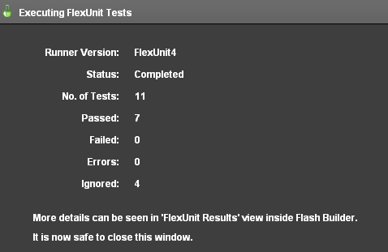Figure 4: Four tests have been ignored
Benefits of Ignore over Comments
As you have just demonstrated, [Ignore] provides a useful way of indicating that a test exists but is, for whatever reason, not ready to run at this time. Ignoring a test ensures that the test is not lost in comments and forgotten.
The [Ignore] metadata provides a few additional benefits over commenting. First, the [Ignore] metadata can accept additional system and user defined arguments.
For example:
[Ignore(description="Phase II Requirement",category="Required"]
[Test]
public function shouldGetPointsOnCircle():void
{
...
}
This additional information can be used for filtering, sorting and reporting on some test systems. Unfortunately, at this time, Flash Builder does not display this extra information to its users. However, it does provide one useful function when using [Ignore]: Flash Builder Premium will display the ignored tests in the case hierarchy. This means you can easily find and click on an ignored method to quickly find it in a large project.
Extensible Assertions
So far we have discussed three types of assertions
assertTrue( condition:Boolean )- Valid if the condition is true
assertFalse( condition:Boolean )- Valid if the condition is false
assertEquals( value1:Object, value2:Object )- Valid if value1 == value2
Standard assertions work well for many cases. However, as the complexity of your tests increases, you may find yourself with long, complicated compound assertions. For example: what if you needed to ensure that the result of a method call was an array that contained at least two specific values?
Ideally, tests not only verify functionality but are also a portion of the documentation for the system. This is only possible if the tests are clear, concise and legible. Further, in cases like the array examples above, you would end up with significant logic in your tests. Any place where logic exists needs to be considered suspect unless there are tests to verify that functionality, and we simply can't recommend writing tests for your tests.
Additionally, the simplistic nature of the assertions you have learned so far, also means they provide simplistic error messages. Take the case of this slightly more complicated assertion that determines if a number is between two other numbers:
assertTrue( num1 > num2 && num1 < num3 );
If this test fails, it would yield the basic and uninformative failure message:
"Expected <true> but was <false>."
This information, while true, is not all that useful for instant problem identification. This lack of information forces the developer back to the original test to understand what was being tested and helps defeat one of the key advantages of having tests.
Hamcrest
Hamcrest is an open source library of matchers, which are simple classes that perform comparisons. These matchers, along with encompassing logic, allow Hamcrest to perform complicated matching with a simple and extensible syntax.
Hamcrest itself is neither a unit testing library, nor specifically made to work with unit tests, but the matchers it exposes are used by FlexUnit to provide a powerful and flexible way to move beyond basic assertions.
When using Hamcrest assertions in FlexUnit, you use a special function named assertThat().
public function assertThat( value, matcher );
Unlike the assertions used so far, the assertThat() method does not inherently prescribe any specific type of comparison or evaluation. Instead, you provide a value and a matcher. It is the matcher that dictates the type of comparison.
Referring back to the example from above, if you wished to know if num1 was between num2 and num3 using standard assert syntax, you would write:
assertTrue( num2 < num1 && num1 < num3);
Using Hamcrest, this same assertion would read:
assertThat( num1, is( between( num2, num3 ) ) );
There are several advantages to the Hamcrest assertion. First, this statement could be read by someone with little testing or development experience and would still be understandable.
Second, if the assertThat() statement above fails it would yield the following result:
"Expected a number between <num2> and <num3> but was <num1>."
which is many, many times more useful than the assertTrue() statement's failure message in this same situation:
"Expected <true> but was <false>."
This particular assertion uses the is() and between() matchers to create a more readable assertion. These are just two of the many types of matchers offered by Hamcrest. Further, as each matcher is simply a class that implements a specific interface, you are encouraged to create your own matchers to make even the most difficult matching clear inside of your test cases.
For more information on Hamcrest and extensible matchers, check out the Hamcrest-as3 page on github available at https://github.com/drewbourne/hamcrest-as3.
Understanding the Floating Point Issue
There were three test failures in Unit 4: Walkthrough 3 because the assertEquals() statement is used to judge equality, which seems logical on the surface. However, there are many times when a computer's concept of equal and our concept of 'equal enough' are not the same.
The shouldGetTopPointOnCircle() method was the only one of the four point tests that passed:
[Test]
public function shouldGetTopPointOnCircle():void {
var circle:Circle = new Circle( new Point( 0, 0 ), 5 );
var point:Point = circle.getPointOnCircle( 0 );
assertEquals( 5, point.x );
assertEquals( 0, point.y );
}
This was the only of the four new point tests that called circle.getPointOnCircle() with an argument of 0. The other three point tests called circle.getPointOnCircle() with Math.PI/2, Math.PI, and (3*Math.PI)/2.
Pi is an irrational number that cannot be expressed exactly. Further, Flash Player itself can only store large numbers to a certain precision. This means that calculations involving any floating point value, and especially an irrational one like Pi, will always have a margin of error.
[Test]
public function shouldGetBottomPointOnCircle():void {
var circle:Circle = new Circle( new Point( 0, 0 ), 5 );
var point:Point = circle.getPointOnCircle( Math.PI );
assertEquals( -5, point.x );
assertEquals( 0, point.y );
}
Figure 1: Failure Stack Trace
If you examine the failure in Flash Builder (Figure 1), you will quickly understand the issue. The result our shouldGetBottomPointOnCircle() method returned the following values for x and y:
- point.x = -5
- point.y = 6.123031769111886E-16 (which is actually 0.0000000000000006123031769111886, expressed in scientific notation)
Both of these calculations are correct within a very acceptable margin of error. However, we told FlexUnit, and hence Flash Player, that they needed to be exactly equal. The problem comes with the specificity of our request, not the test. To that end, we need a way to explain to FlexUnit that we are okay with a margin of error. While the standard assertions can't provide that for us, Hamcrest can.
Walkthrough 2: Using Hamcrest to deal with Floating Point Issues
In this walkthrough you will perform the following tasks:
- Use the
assertThat()statement with extensible assertions.
Steps
-
Open the FlexUnit4Training.mxml file from the previous exercise.
Alternatively, if you didn't complete the previous lesson or your code is not functioning properly, you can import the FlexUnit4Training_wt2.fxp project from the Unit 5/Start folder. Please refer to Unit 2: Walkthrough 1 for instructions on importing a Flash Builder project.
Using the assertThat() method with extensible assertions -
At the top of the
BasicCircleTestclass declare a private, static constant with the name ofTOLERANCEand a data type ofNumber. Set the constant equal to.0001.public class BasicCircleTest { private static const TOLERANCE:Number = .0001; ... }We will use this value to determine "close enough." If the result is between our expected value plus or minus the tolerance, we are willing to consider the value to be close enough.
-
Replace the first
assertEquals()assertion of theshouldgetTopPointOnCircle()function with theassertThat()statement as shown.Replace this statement:
assertEquals( 5, point.x );With this statement:
assertThat( point.x, closeTo( 5, TOLERANCE ) );Be sure to either use the code complete with assertThat and closeTo, or manually add their imports.
import org.flexunit.assertThat;<br />import org.hamcrest.number.closeTo; -
Remove [Ignore] metadata from the
shouldGetBottomPointOnCircle(),shouldGetLeftPointOnCircle()andshouldGetRightPointOnCircle()methods.Unlike
assertEquals(), thecloseTo()Hamcrest matcher specifies that we need to look for numerical equivalence within a specific margin of error. -
Change all the point tests so that each uses the
assertThat()statement in place ofassertEquals().[Test] public function shouldGetTopPointOnCircle():void { var circle:Circle = new Circle( new Point( 0, 0 ), 5 ); var point:Point; point = circle.getPointOnCircle( 0 ); assertThat( point.x, closeTo( 5, TOLERANCE ) ); assertThat( point.y, closeTo( 0, TOLERANCE ) ); } [Test] public function shouldGetBottomPointOnCircle():void { var circle:Circle = new Circle( new Point( 0, 0 ), 5 ); var point:Point; point = circle.getPointOnCircle( Math.PI ); assertThat( point.x, closeTo( -5, TOLERANCE ) ); assertThat( point.y, closeTo( 0, TOLERANCE ) ); } [Test] public function shouldGetRightPointOnCircle():void { var circle:Circle = new Circle( new Point( 0, 0 ), 5 ); var point:Point; point = circle.getPointOnCircle( Math.PI/2 ); assertThat( point.x, closeTo( 0, TOLERANCE ) ); assertThat( point.y, closeTo( 5, TOLERANCE ) ); } [Test] public function shouldGetLeftPointOnCircle():void { var circle:Circle = new Circle( new Point( 0, 0 ), 5 ); var point:Point; point = circle.getPointOnCircle( (3*Math.PI)/2 ); assertThat( point.x, closeTo( 0, TOLERANCE ) ); assertThat( point.y, closeTo( -5, TOLERANCE ) ); } -
Save the BasicCircleTest.as file.
-
Run the FlexUnit4Training.mxml file. If the tests ran successfully, you should see the following output.
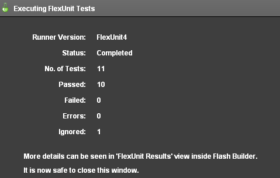Figure 1: FlexUnit tests passed, one ignored
Writing Matchers
The Hamcrest library includes base matchers to cover a wide variety of potential situations. You are encouraged to create your own custom matchers when encountering a situation that can be handled more easily, or more clearly, with a new matcher.
One of the goals behind Hamcrest is to create highly readable matching. If you examine your unit tests, they are still legible but becoming less so as the complexity of testing increases. For example:
assertThat( point.x, closeTo( -5, TOLERANCE ) );
assertThat( point.y, closeTo( 0, TOLERANCE ) );
Neither you, nor another individual that may read this code later, really cares that the point's x and y properties are within a tolerance. What you really care about is that one Point is close to another Point within a given tolerance.
assertThat( point, closeToPoint( otherPoint, TOLERANCE ) );
While this is a simple example, custom matchers continue to become more effective as the complexity of your tests grows.
Custom matcher classes extend the TypeSafeMatcher class. Basic custom matchers are written with three methods.
- Constructor
- Used to provide the values being matched.
- Override of
matchesSafely() - Accepts an item of data type
Objectthat will be compared to the provided values. You perform any logic to determine if the values match or not in this method and return a Boolean indicating the result. - Override of
describeTo() - Used to create the informative error descriptions characteristic of Hamcrest. This should return the descriptive string.
Walkthrough 3: Writing your own matcher
In this walkthrough you will perform the following tasks:
- Create a new ActionScript package.
- Write a custom matcher.
- Use the custom matcher in the
getPointOnCircle()tests.
Steps
-
Open the BasicCircleTest.as file from the previous exercise.
Alternatively, if you didn't complete the previous lesson or your code is not functioning properly, you can import the FlexUnit4Training_wt3.fxp project from the Unit 5/Start folder. Please refer to Unit 2: Walkthrough 1 for instructions on importing a Flash Builder project.
Create the matcher package -
Within the tests directory, create another package named matcher. Right click on the tests directory and choose New > Package.
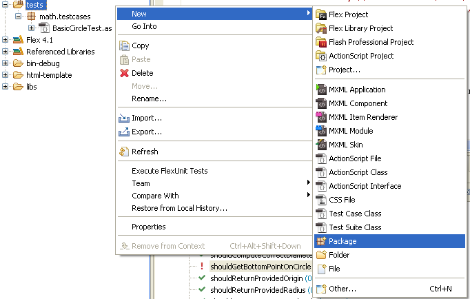Figure 1: Create a new package
-
The Name should be matcher.
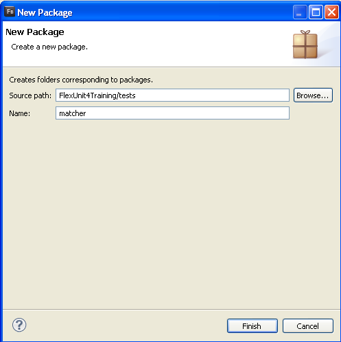Figure 2: New package window
Create the matcher class -
You will now need to create a new class within the helper package. Right click on the package and choose New > ActionScript Class.
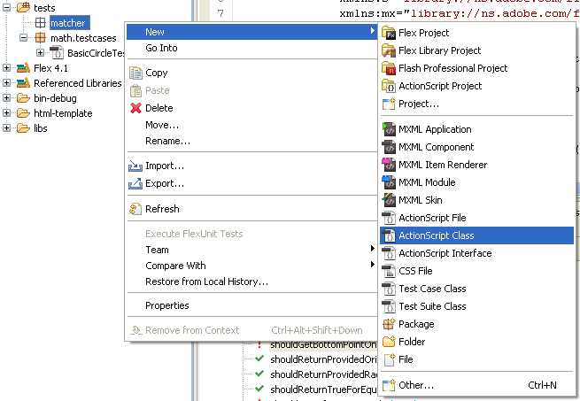Figure 3: Create a new class in the helper package
-
The class should be named CloseToPointMatcher and its Superclass should be org.hamcrest.TypeSafeMatcher. Modifiers should be set to public and the Generate constructor from superclass option should be checked. Click Finish.
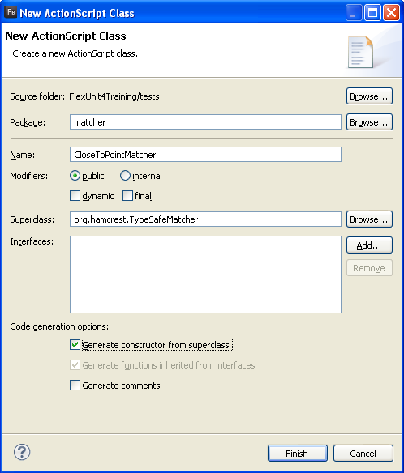Figure 4: New ActionScript Class CloseToPointMatcher
-
Open the CloseToPointMatcher.as file from the matcher package.
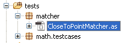Figure 5: Package directory structure
-
Add a private variable named
pointof typePointand another namedtoleranceof data typeNumberto the class.private var point:Point; private var tolerance:Number;If you did not use code-completion, add the import for flash.geom.Point at this time.
-
Modify the automatically created
CloseToPointMatcher()constructor. To accept point and tolerance parameters, instead of anexpectedType. Pass a reference of the Point class to the superclass's constructor, and populate the local circle and offset properties with the appropriate argument from the constructor.public function CloseToPointMatcher( point:Point, tolerance:Number ) { super(Point); this.point = point; this.tolerance = tolerance; }The
super(Point)declaration is informing the classes the data types that the class will be dealing with is a Point class. -
Override the
matchesSafely()method of the class. It will take an argument nameditemof data typeObject, and will return a Boolean.override public function matchesSafely(item:Object):Boolean { } -
In the
matchesSafely()method, declare a variable nameddistanceof data typeNumber. Set it equal toPoint.distance( item as Point, point );override public function matchesSafely(item:Object):Boolean { var distance:Number = Point.distance( item as Point, point ); } -
Add a return statement that checks if the
tolerancesubtracted from the absolute value of thedistanceis less than 0.override public function matchesSafely(item:Object):Boolean { var distance:Number = Point.distance( item as Point, point ); return( Math.abs( distance ) - tolerance < 0 ); } -
Add an override for the public function
describeTo(). It will take an argument nameddescriptionof typeDescription. Because there are two availableDescriptionclasses, make sure to choose theorg.hamcrest.Descriptionclass when you use code completion.override public function describeTo(description:Description):void { description.appendText( "point " ).appendText( point.toString() ); }If you did not use code-completion, add the import for
org.hamcrest.Description. -
Save CloseToPointMatcher.as.
-
Open the BasicCircleTest.as file.
-
Modify the
shouldGetTopPointOnCircle()method so that it reads as follows.[Test] public function shouldGetTopPointOnCircle():void { var circle:Circle = new Circle( new Point( 0, 0 ), 5 ); var point:Point = circle.getPointOnCircle( 0 ); assertThat( point, new CloseToPointMatcher( new Point( 5, 0 ), TOLERANCE ) ); }Be sure to either choose CloseToPointMatcher from the code-completion, or manually add the import:
import matcher.CloseToPointMatcher; -
Each of the point testing functions should follow this format. Instantiate the circle, instantiate the expected point, and finish with the assertion.
[Test] public function shouldGetTopPointOnCircle():void { var circle:Circle = new Circle( new Point( 0, 0 ), 5 ); var point:Point = circle.getPointOnCircle( 0 ); assertThat( point, new CloseToPointMatcher( new Point( 5, 0 ), TOLERANCE ) ); } [Test] public function shouldGetBottomPointOnCircle():void { var circle:Circle = new Circle( new Point( 0, 0 ), 5 ); var point:Point = circle.getPointOnCircle( Math.PI ); assertThat( point, new CloseToPointMatcher( new Point( -5, 0 ), TOLERANCE ) ); } [Test] public function shouldGetRightPointOnCircle():void { var circle:Circle = new Circle( new Point( 0, 0 ), 5 ); var point:Point = circle.getPointOnCircle( Math.PI/2 ); assertThat( point, new CloseToPointMatcher( new Point( 0, 5 ), TOLERANCE ) ); } [Test] public function shouldGetLeftPointOnCircle():void { var circle:Circle = new Circle( new Point( 0, 0 ), 5 ); var point:Point = circle.getPointOnCircle( (3*Math.PI)/2 ); assertThat( point, new CloseToPointMatcher( new Point( 0, -5 ), TOLERANCE ) ); } -
Save BasicCircleTest.as
-
Run the FlexUnit4Training.mxml file.
If FlexUnit4Training.mxml ran successfully you should see the following output in your browser window:
Figure 6: FlexUnit tests passed, one test ignored
Exceptions
There are times when your code should throw an error in response to a given situation, such as when an illegal value or null is provided to a required property. In these cases the actual outcome of a test is not to assert a condition but to verify that the error was thrown as expected.
If an error is NOT thrown in this situation, it should be considered a failure while throwing the error would be a success. This logical inversion is often handled by wrapping all testing functionality in try-catch blocks. However, this leads to ugly, illegible and difficult to maintain code.
FlexUnit 4 simplifies this process by allowing an expects argument in the Test annotation for this purpose.
- To use the expects annotation, simply provide the type of error expected.
[Test (expects="full.package.ThrownError")]
public function testError():void {}
ThrownError, FlexUnit 4.x will recognize this method as a success and mark the test as passed.ThrownError then FlexUnit 4 marks that test as a failure, since the expected error type did not match the error that was thrown, and something else is causing your method to fail.The expects="" attribute only verifies the type of the error, it does not evaluate the properties of the error instance. If you need to verify data internal to the error you must catch the error yourself and perform assertions.
In most cases, the expects="" attribute works well as the existence of the error is often most important.
Walkthrough 4: Handling an exception in a Test
In this walkthrough you will perform the following tasks:
- Add a statement that will throw an error when the tests are run.
- Handle a desired exception using
expects=""attribute.
Steps
-
Open the BasicCircleTest.as file from the previous exercise.
Alternatively, if you didn't complete the previous lesson or your code is not functioning properly, you can import the FlexUnit4Training_wt4.fxp project from the Unit5/Start folder. Please refer to Unit 2: Walkthrough 1 for instructions on importing a Flash Builder project.
Run a new test -
At the end of the
BasicCircleTestclass there is an ignored test method namedshouldThrowRangeError(). Remove the[Ignore]metadata from this function and declare a variable namedsomeCircleof typeCircle. Instantiate theCirclewith an origin of(10, 10)and a radius of-5.[Test] public function shouldThrowRangeError():void { var someCircle:Circle = new Circle( new Point( 10, 10 ), -5 ); } -
Save BasicCircleTest.as
-
Run FlexUnit4Training.mxml.
If FlexUnit4Training.mxml ran successfully you should see the following output in your browser window:
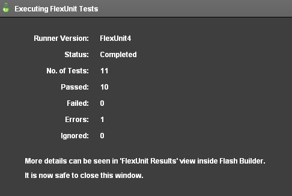Figure 1: A single test has thrown an error
The
shouldThrowRangeError()test is throwing an error. The error comes from the test's attempt to instantiate a Circle object with a radius of -5. Even without looking at the code, one could conclude that a Circle with a negative radius has conceptual issues.Notice that FlexUnit is registering the error without any assertion statement present in the function. If a test method throws an error at any point, FlexUnit will register that method as an error.
When a test fails due to a failed assertion, it is considered a failure. When it fails due to a run time exception, it is considered an error. While the result is the same, a test that does not pass, errors are generally considered more heinous as they indicate an unhandled exception.
Using "expects" metadata to deal with anticipated errors -
Return to the BasicCircleTest class. Modify the
[Test]metadata tag on the line above theshouldThrowRangeError()function to indicate that it expects aRangeError.[Test(expects="RangeError")] public function shouldThrowRangeError():void { var someCircle:Circle = new Circle( new Point( 10, 10 ), -5 ); }RangeError exists in the default package, and hence appears to just be the class name. For your own custom errors or errors defined in the Flex framework, it is important you provide the full path.
-
Save BasicCircleTest.as
-
Run the FlexUnit4Training.mxml file again.
If FlexUnit4Training.mxml ran successfully you should see the following output in your browser window:
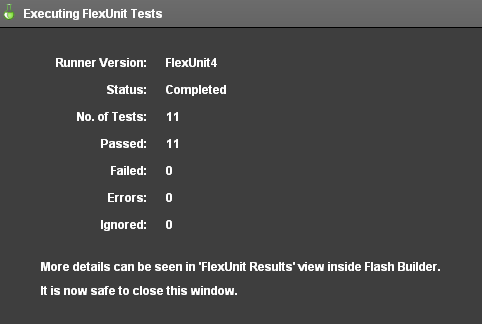Figure 2: FlexUnit tests passed
The
shouldThrowRangeError()method has still thrown an error. Because of theexpects="RangeError"metadata, FlexUnit knows that this is the expected condition. If that particular error is not thrown, FlexUnit considers it a failure for the test.
Summary
-
You can create a roadmap for testing by writing out all the expected tests without functionality.
-
Marking tests with [Ignore] metadata is the best way to ensure that you are aware of incomplete test methods.
-
Test methods should be written with as few assertions per test as possible.
-
Hamcrest can:
- Increase code readability
- Increase test report specificity
- Customize tests to assert better conditions
-
You can write custom matchers for use with the
assertThat()method. -
The
expects=""attribute of [Test] annotation can be used to handle expected exceptions in your tests.